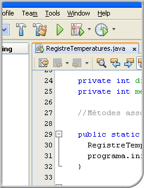

Aplicacions web

- Coordinació
- Anna Castelló Gistau, M. del Mar Sánchez-Colomer Ruiz, Alicia Vila Grifo
- Redacció
- Raúl Broceño Corrales, Jordi Cárdenas Guia, Montserrat Madridejos Mora, Nuria Montolio Catalán, Mònica Ramírez Arceda, Oriol Torres Carrió
- Informàtica i comunicacions
- W.CFGM.SMX.M08/0.15
- CFGM - Sistemes microinformàtics i xarxes
© Departament d'Educació
Primera edició: Setembre 2015
Última actualització: de setembre 2021
Primera edició: Setembre 2015
Última actualització: de setembre 2021